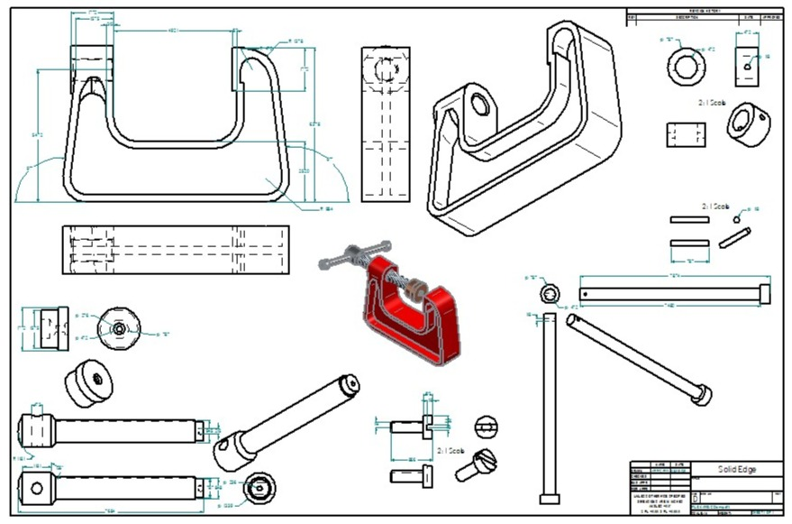
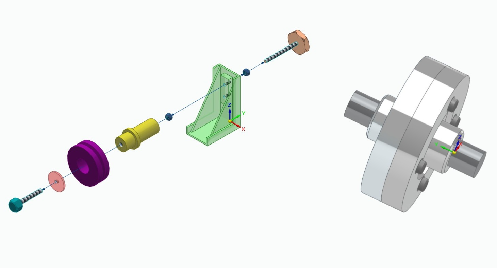
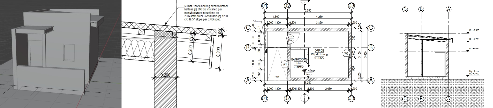
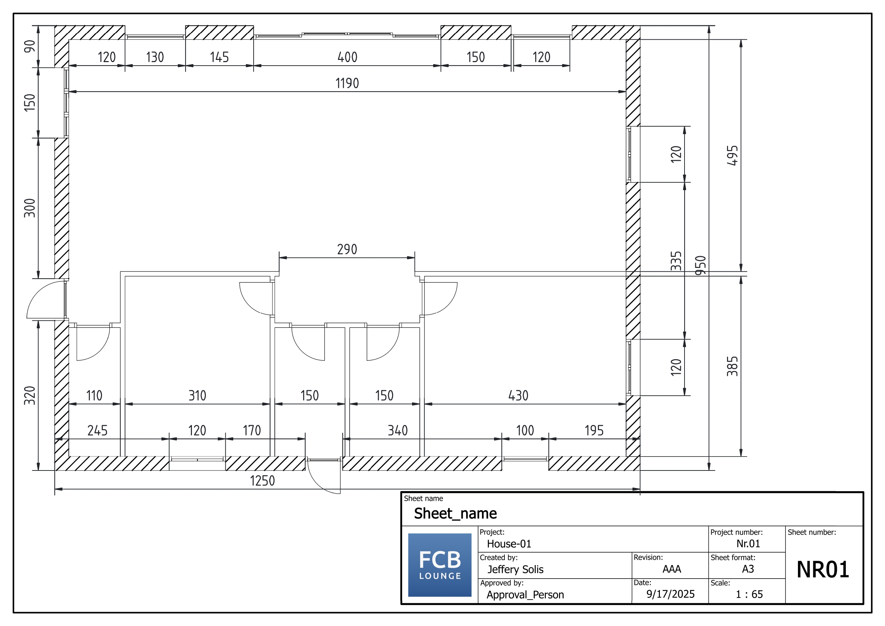
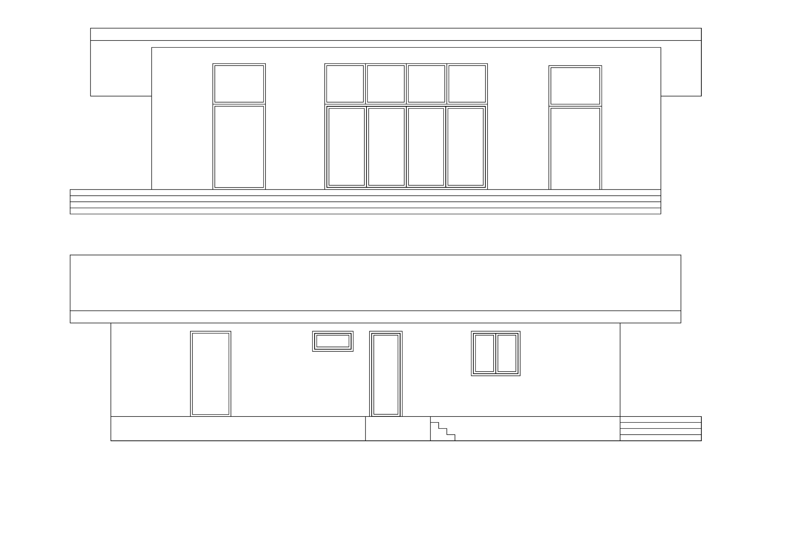
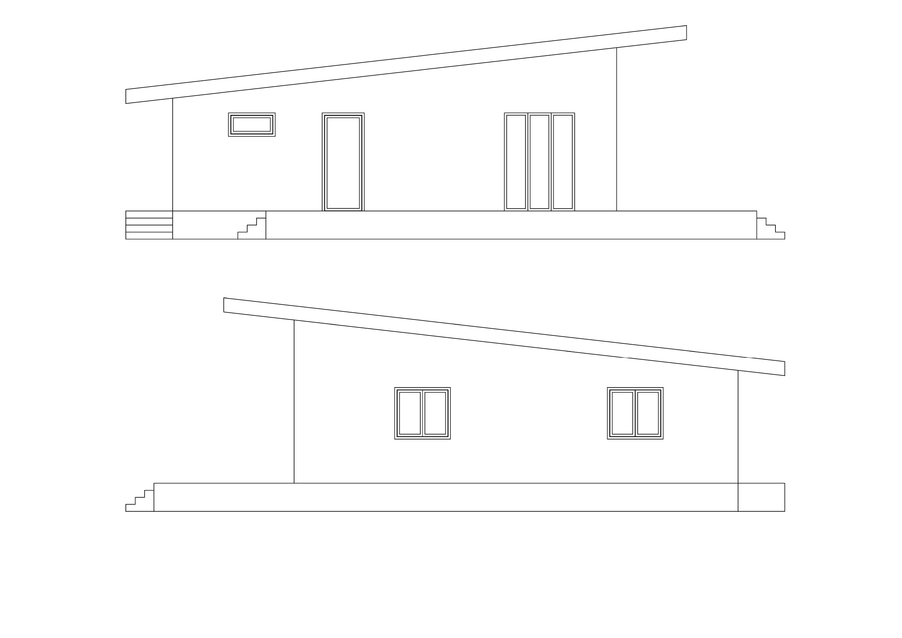
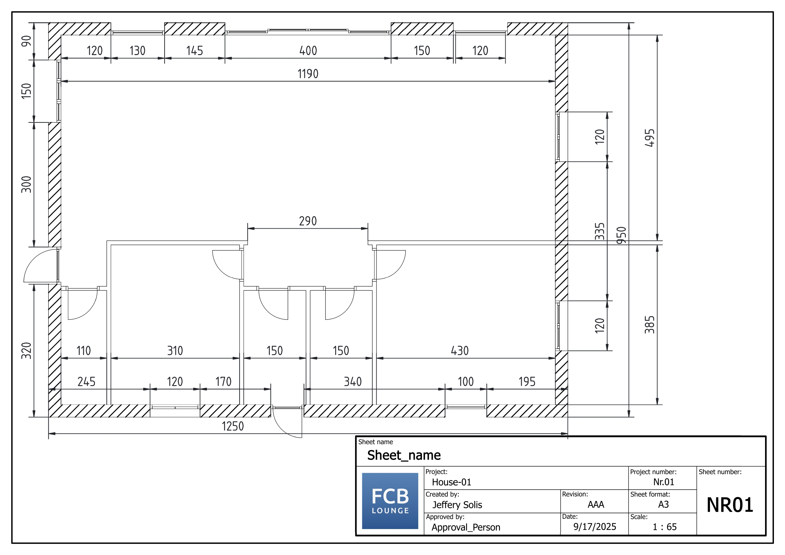
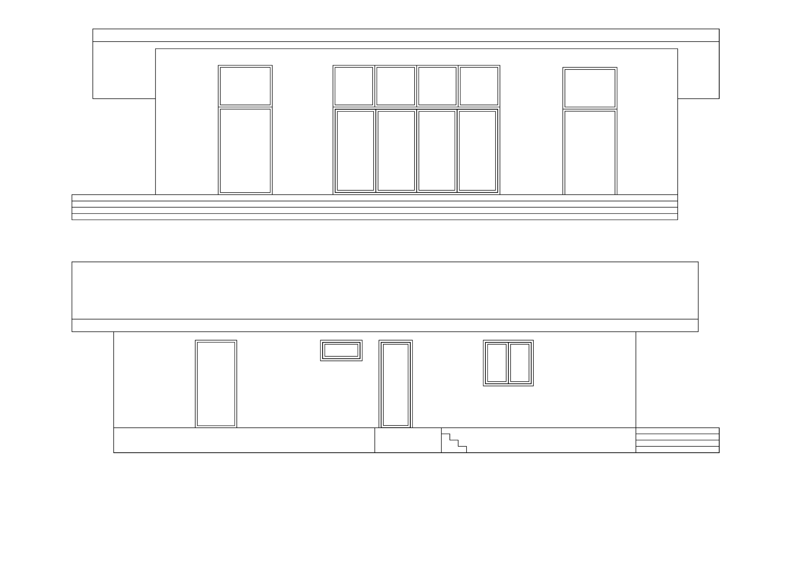
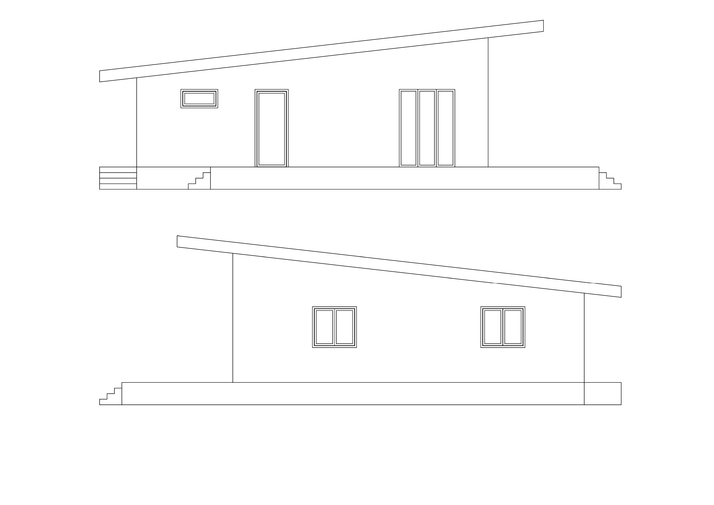

Jeffery Solis' Portfolio
Blender Donut Tutorial
I completed the full “Beginner Blender Tutorial – Donut Tutorial” by Blender Guru, covering the complete workflow of 3D modeling—from initial object creation to final rendering—using Blender’s modeling, texturing, lighting, and rendering tools.You will find the final product bellow, there is a still image rendered with 300 samples. The video animation was also made with Blender. The quality isn't to the same degree, it was rendered at around 40 samples per frame for a total of 160 frames. Quality was sacrificed for time, rendering 160 frames at 300 samples would take 7 hours, which wasn't an option for me.
Skills Learned:
3D Modeling: Mesh creation, extrusion, scaling, subdivision
Texturing & Materials: Applying colors, textures, and surface properties
Lighting Setup: Positioning light sources for realistic rendering
Camera Setup: Framing and adjusting views for final renders
Rendering: Using Cycles and Eevee for high-quality output
Workflow Management: Layer organization, iterative refinement, and project structure
Visual Presentation: Creating polished, realistic models for technical and creative projects
Solid Edge Tutorials
I followed a series of Solid Edge tutorials that demonstrated the modeling and assembly of three mechanical designs: a bushed-pin flanged coupling, a belt support, and a C-clamp. Each video walked through the step-by-step process of creating and assembling these components into complete mechanical systems. This served as a good introduction to Solid Edge, showing both how to use the software and most of the tools within it. The draft image is meant to show the capacity of Solid Edge, rather than a professional draft image, hence the overcrowding.
 Skills Learned:
3D CAD Assembly Modeling : inserting and organizing multiple parts into complete assemblies
Constraint Application (Mates, Alignments, Fits) : ensuring accurate positioning and interaction between components
Parametric Design Adjustments : modifying part dimensions while maintaining assembly relationships
Exploded Views & Visualization : presenting assemblies in clear, step-by-step breakdowns (especially in the C-Clamp tutorial)
Mechanical Interpretation : understanding how individual parts (pins, flanges, belts, clamps) work together within a functional system
Documentation & Presentation : preparing assemblies for communication, demonstration, or engineering review
Bonsai in Blender Project
I completed a playlist of Bonsai Blender tutorials. Bonsai is an add-on for Blender that enables full Building Information Modeling (BIM) workflows, using Industry Foundation Classes standard. While it isn't at the level of other CAD software, specifically Autodesk products, it is free and open-source which allows for a great base for learning about BIM and general CAD functions. It also gives allows for a plethora of options for visualization with the Blender functions.
Skills Learned:
3D Modeling Fundamentals : building and refining digital objects with accuracy
2D Drafting Techniques : creating technical floor plans and layouts from 3D models
Section & Elevation Generation : producing orthographic views to understand structural and spatial relationships
3D Detail Drawing Production : adding precision to components for clarity in construction or manufacturing
Design Documentation Workflow : moving seamlessly from concept to technical deliverables
Spatial & Structural Awareness : visualizing how parts and systems interact within a design
Precision & Accuracy in Drafting : ensuring clarity and usability of drawings for engineering or construction teams
FreeCAD Modeling
I completed various video tutorials, using an open source CAD software called FreeCAD. This collection of tutorials focuses on applying FreeCAD’s BIM workbench to real-world architectural and mechanical system modeling. The videos guide viewers through creating a complete building model—beginning with architectural elements like slabs, walls, and roofs—before progressing into the design of drainage piping systems and HVAC duct assemblies. Each tutorial showcases how FreeCAD can be used to model and integrate multiple building systems within a single coordinated BIM environment. These tutorials highlight the connection between structural and mechanical design, demonstrating how different systems interact within a digital building model. The process mirrors real-world engineering workflows, emphasizing the coordination between architectural design, plumbing layout, and HVAC planning—skills that are essential for multidisciplinary engineering collaboration and technical precision.
 





Skills Learned:
Architectural BIM Modeling : creating structural and spatial building elements such as slabs, walls, doors, and roofs
MEP System Design : developing and routing drainage and HVAC systems within a 3D model
System Integration : coordinating mechanical and architectural components within one BIM file
Assembly and Routing : connecting ducts and pipes using predefined library components
Technical Documentation : generating 2D plans, sections, and system drawings from the 3D model
Workflow Coordination : understanding relationships between building structure and mechanical systems
BIM Software Proficiency : applying data-driven modeling and information-rich workflows using FreeCAD